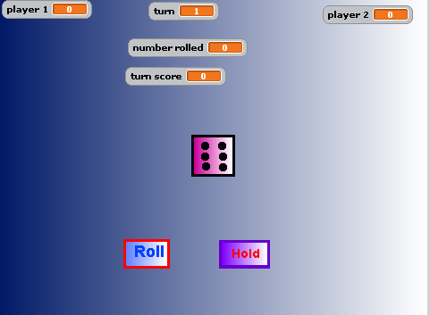
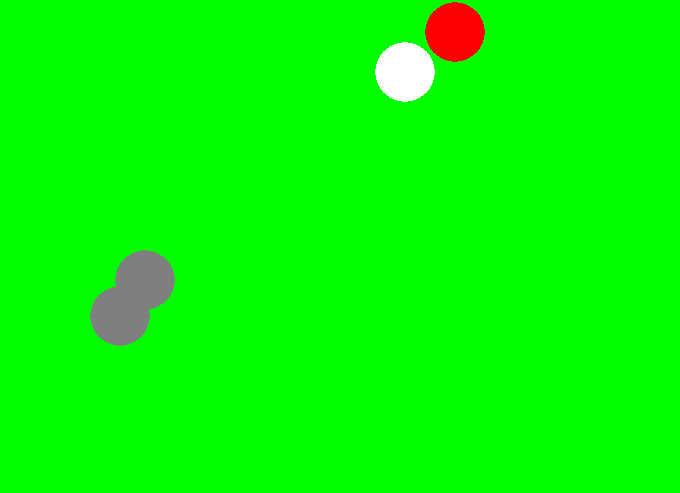
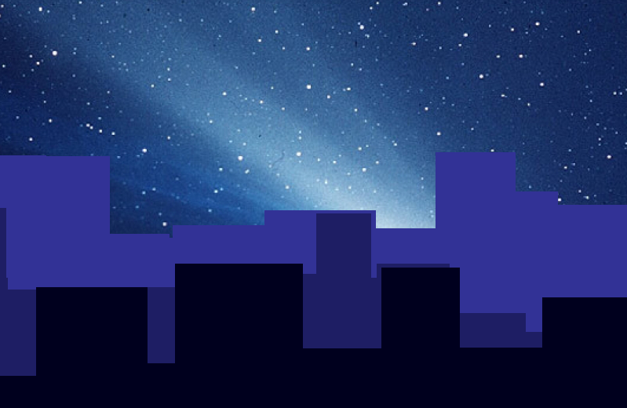

This is one was created by Scratch. I programed two Spirts which is the ball and the paddle. The ball is program to if it hits the edge of the screen or the paddle it picks a random angle and moves that way but if it misses the paddle everything stops. The paddle is program to move by the mouse left or right and stays on the same y-axis. It also changes color if the ball hits it.
This is also created by Scratch. Here I program 3 spirts which are the dice, the roll and the hold. the roll and hold are broad casting to the dice so that when the player clicks on them the dice either rolls or moves to the next player.
This is a project where we created by the click many balls. We used python for it.
This we created many that is suppose to have a night view to it.